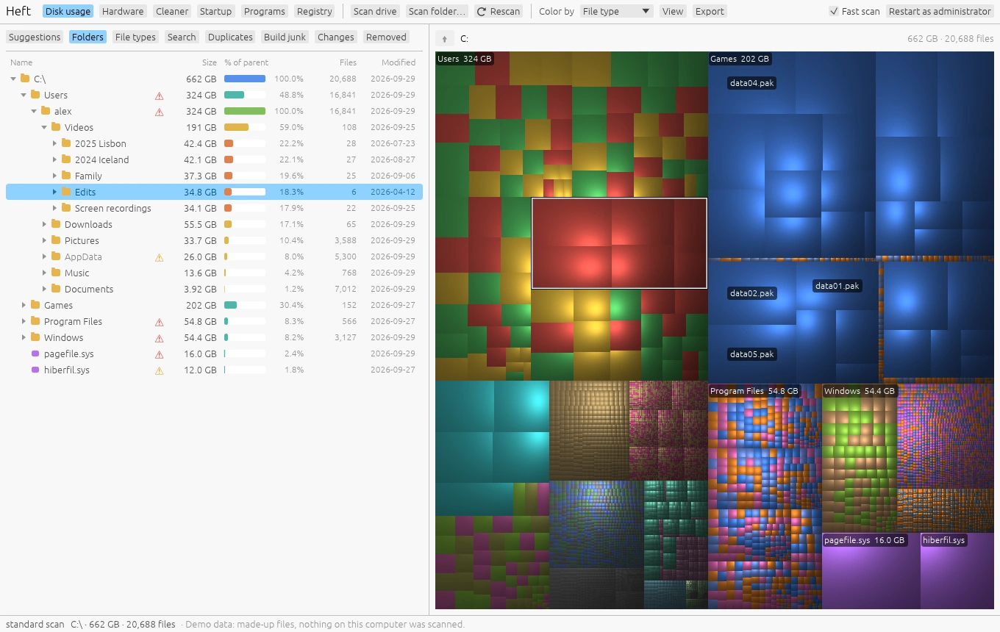
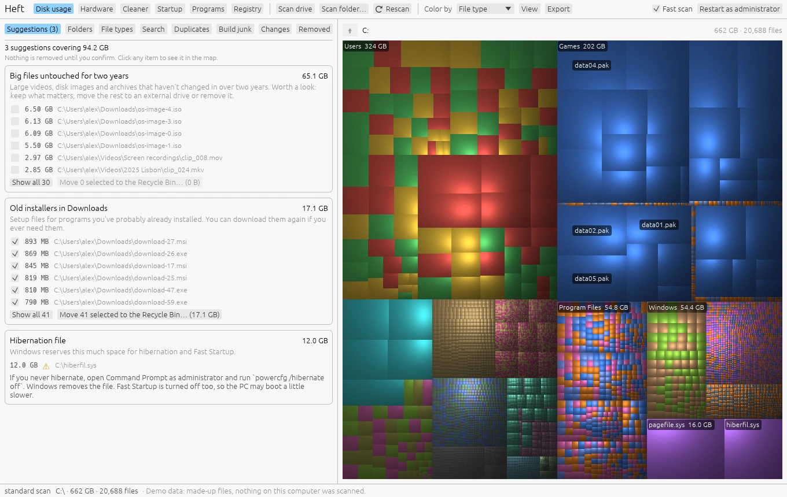
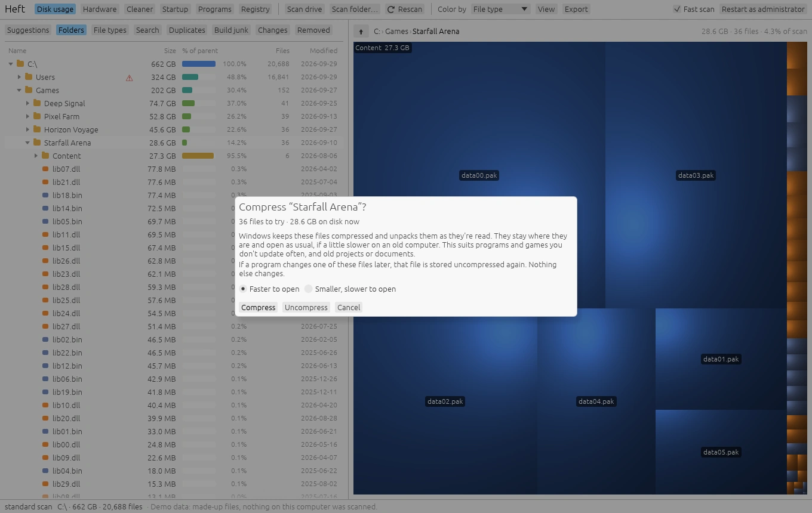
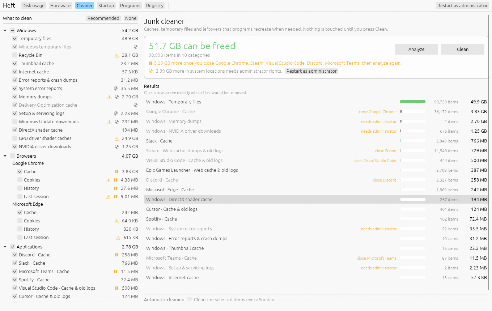
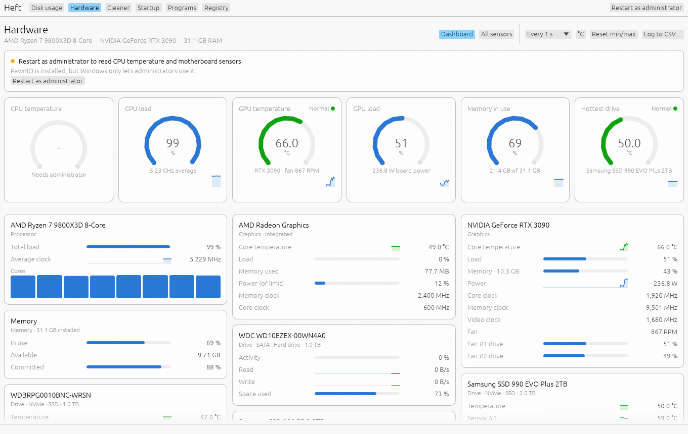

Guides
New to Heft? Start with the tutorial. These guides go into each part in more depth.

Finding what uses space
Scanning, the treemap, the folder tree, file types, search, changes over time and export.

Cleaning up safely
Suggestions, build junk, what the warnings mean, deleting, and putting things back.

Duplicates and saving space
Find duplicate files, replace copies with links or clones, compress folders and move folders to another drive.

The Cleaner
Caches and temporary files, what's covered, weekly cleaning, and shrinking WSL and Docker disks.

Hardware monitor
The dashboard, the sensor table, history charts, logging, what Heft reads on each system, and setting up PawnIO for CPU temperatures on Windows.
Startup, programs and registry
Turn off what starts with Windows, uninstall programs and clear their leftovers, update through winget, and fix broken registry entries with backups.
Login items, apps and broken items
Turn off login items and launch agents, uninstall apps and clear their leftovers, update through Homebrew, and remove entries left pointing at deleted apps, with backups.
Free space alerts
Get a notification before a drive fills up, and keep Heft watching from the notification area or the menu bar.
Command line
Export scans to CSV or JSON, run the Cleaner from a script, render treemap images and read sensors.
FAQ and troubleshooting
Security warnings on first launch, why sizes differ from Explorer, administrator rights, privacy and uninstalling.